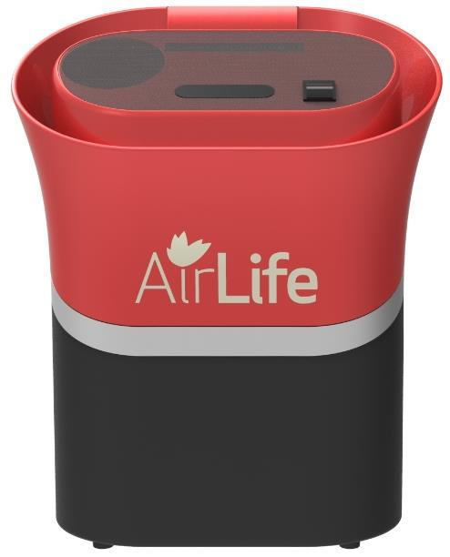
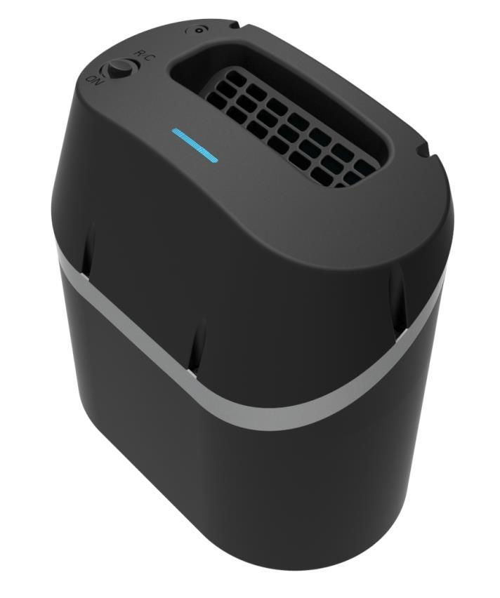
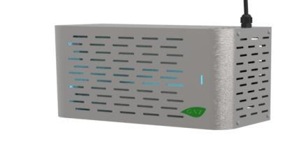
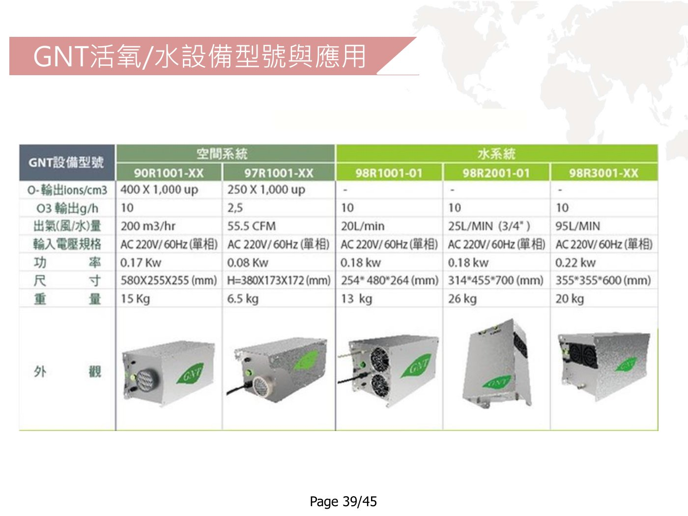

跳至主要內容
銳泰國際企業
GREEN NATURAL TECHNOLOGY
選單
☰
公司簡介
運作原理
應用領域
設備介紹
驗證與案例
資料下載 ↗
首頁
/
設備介紹
EQUIPMENT
設備介紹
依空間、產業與處理需求，了解 GNT 設備及其應用規格。

汽車與運輸工具設備
輸入電壓
12V DC 直流電
頻率
50/60Hz
重量
約 6.9kg
尺寸（L × W × H）
290 × 170 × 440 mm

手提式活氧淨化設備
電壓／頻率
DC12V／60Hz
重量
約 4.8kg
尺寸
170 × 290 × 300 mm
操作方式
手動／遙控
應用空間
小於 500 m³
移動式活氧淨化設備
輸入電壓／頻率
110V／60Hz
重量
約 6.8kg
尺寸
382 × 354 × 600 mm
操作方式
手動定時
應用空間
500–800 m³

餐廳紫外線空氣淨化殺菌設備
輸入電壓／頻率
110V／60Hz
重量
約 3.2kg
尺寸
320 × 100 × 220 mm
操作方式
定時運作
大型工業除味淨化設備系統
輸入電壓／頻率
220V/380V／60Hz
尺寸
1,000 × 450 × 1,415 mm
輸出產量
依需求設計
操作方式
定時操作
PROJECT RECORDS
GNT 活氧／水設備型號與應用
點選圖片查看完整資料 ↗

活氧與水設備型號表 ↗